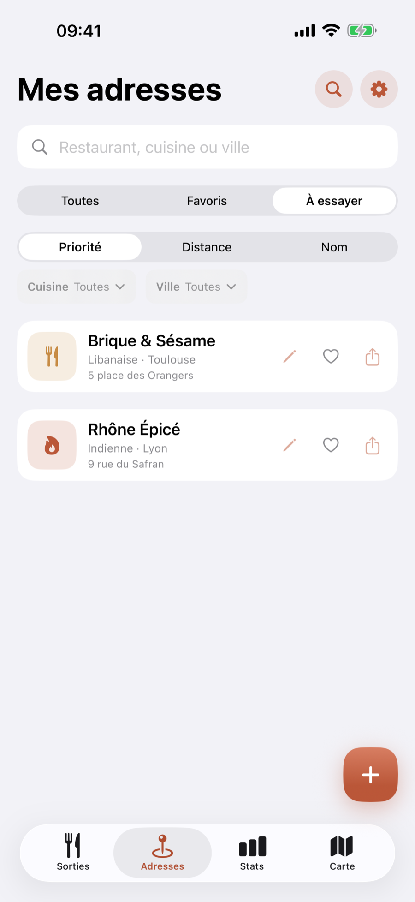

Cherchez autour de vous
Restaurants, bars, cafés, boulangeries ou spécialité libre, dans un rayon de 1, 5 ou 10 km.
Votre carnet de restaurants sur iPhone
Sorties, adresses, tickets et budget réunis dans une app simple, privée et agréable à utiliser.
Voir l’application ↓
L’app en images
Faites défiler les captures pour découvrir l’application.




Glissez pour voir la suite →
Une seule saisie
Un lieu habituel ou une adresse proposée près de vous.
Date, montant et note. Le reste est facultatif.
La sortie et la fiche du restaurant restent reliées.
Scan de ticket
L’app récupère le restaurant, la date et le montant. Vous vérifiez avant d’enregistrer.
Nouveautés
Restaurants, bars, cafés, boulangeries ou spécialité libre, dans un rayon de 1, 5 ou 10 km.
Un glissement vers la droite ou un appui long suffit.
La liste reste accessible sans prendre toute la place.
Effacez séparément le nom, l’adresse, la ville ou la cuisine.
Votre budget
Dépenses, cuisines préférées, tables les plus visitées et meilleures notes.
Et aussi
Gardez vos prochaines envies.
Envoyez le nom et l’adresse.
Lancez l’itinéraire dans Plans.
Enregistrez aussi un montant de 0 €.
Sans abonnement
10 sorties · 10 adresses
5 envies · 2 scans
Tout en illimité
Autour de moi · Stats · PDF
Bientôt sur l’App Store
Gratuite à télécharger sur iPhone.
Version complète en achat unique.